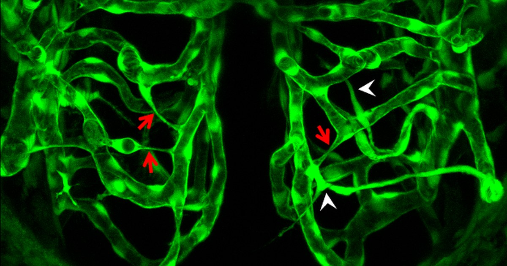

Your brain's plumbing plays favorites
Every fMRI headline rests on one quiet assumption, that blood flow tracks how hard neurons fire. A new study in mice finds the brain's plumbing is wired by the type of input and the cortical layer, so the same amount of activity can move very different amounts of blood.

For more than thirty years, the workhorse of human brain imaging has run on a single bet. When a patch of brain gets busy, it calls for more blood, so if you can map where the blood goes, you can map where the thinking happened. That's the whole idea behind the BOLD signal, the blood-oxygen contrast that lights up in an fMRI scanner. We wrote about how thin that bet actually is in what an fMRI really measures. A new paper says it's thinner than even that.
What they actually did
A team led by Antoine Malescot with senior author Ravi Rungta reports in Science, published on August 20, 2026, that neurovascular coupling, the link between brain activity and blood flow, is not one uniform response. In their words, "in mice, neurovascular coupling is modality-dependent," meaning the kind of input matters. Using what they call multiscale optical imaging, they watched both neurons and blood vessels react across four conditions, gentle touch, a painful stimulus, motor-sensory feedback from the mice's own movement, and quiet spontaneous activity with no stimulus at all. So they weren't just measuring how much the brain lit up. They were measuring how the plumbing responded to different jobs.
Two kinds of pipes
The cortex is layered, six sheets of tissue stacked from the surface down, and it turns out the arterioles feeding those layers don't all behave the same way. The team found that shallow arterioles, the ones near the surface, dilate in step with activity in the superficial layers they sit in. The deep arterioles do something different. They "integrate signals broadly across input conditions," pooling a wider read of what's happening rather than tracking one local patch. One set of vessels is a local reporter. The other is more of a regional wire service.
The part that should give fMRI readers pause
Here's the line that matters. The authors write that "arteriole type-specific dilation decouples the magnitude of local neuronal activity from capillary blood flow responses, with flow patterns shaped by vascular topology." Read that slowly. The size of the blood-flow response is not simply set by how hard the neurons fire. It's also set by which arterioles happen to be wired into that spot and how they're built. Two patches of cortex firing at the same rate can send different amounts of blood downstream, purely because their plumbing is laid out differently. They confirmed the pattern held up in a computer model of the vascular network, so it isn't a quirk of one measurement.
That's a real crack in one of the founding assumptions of BOLD imaging, that the size of the blood-flow response cleanly reports the amount of neural activity. If blood flow is shaped by vascular architecture and by the type of input, then a brighter spot on a scan doesn't cleanly mean more neural activity. It can mean the same activity sitting on top of a more responsive stretch of plumbing.
Where to keep your guard up
A few honest limits. This is a mouse study using invasive optical imaging, not a human fMRI experiment, so it maps the mechanism rather than proving how badly it distorts any particular human scan. The effect is about the spatial fine print, which layer and which vessel, not a claim that fMRI measures nothing real. Whole-brain human fMRI averages over a much coarser scale than the arteriole-by-arteriole view here, so a lot of this detail washes out at the resolution of a standard scan. What the paper does is tell you the direction of the error and where it comes from, which is exactly what you want before you trust a bright blob.
Neurovascular coupling was always the quiet middleman between the brain and the pictures we take of it. This work shows the middleman has opinions.
The bottom line
Blood flow was never a neutral meter of activity, and now we can see one more reason why. It's shaped by the architecture of the vessels themselves, and by what kind of signal the brain is handling. This doesn't sink fMRI. It just shows where the map and the territory come apart, in specific and now-traceable ways, and knowing where a tool bends beats trusting a picture you thought was perfect.